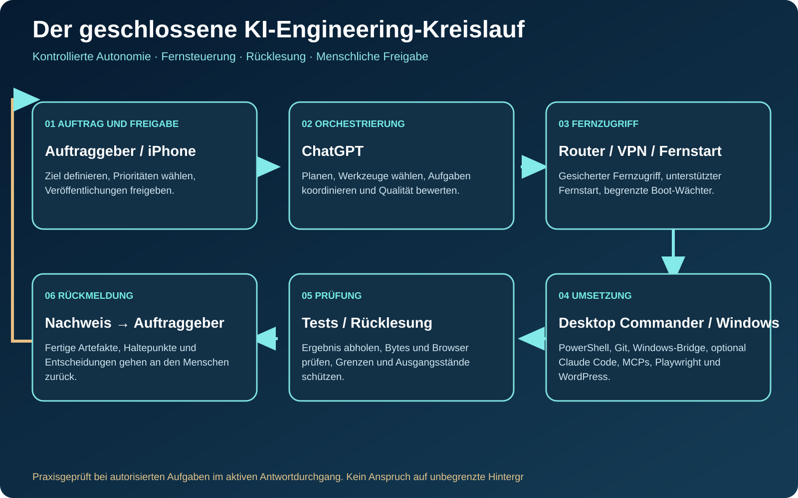

TangoToCoding · Portfolio Der geschlossene KI-Engineering-Kreislauf Mensch, ChatGPT, Fernzugriff, Windows-Werkbank und spezialisierte Werkzeuge bilden einen kontrollierten Arbeits- und Rückmeldekreislauf.

01 · AUFTRAG UND FREIGABE Auftraggeber / iPhone Ziel definieren, Prioritäten wählen, Veröffentlichungen freigeben.
02 · ORCHESTRIERUNG ChatGPT Planen, Werkzeuge wählen, Aufgaben koordinieren und Qualität bewerten.
03 · FERNZUGRIFF Router / VPN / Fernstart Gesicherter Fernzugriff, unterstützter Fernstart, begrenzte Boot-Wächter.
04 · UMSETZUNG Desktop Commander / Windows PowerShell, Git, Windows-Bridge, optional Claude Code, MCPs, Playwright und WordPress.
05 · PRÜFUNG Tests / Rücklesung Ergebnis abholen, Bytes und Browser prüfen, Grenzen und Ausgangsstände schützen.
06 · RÜCKMELDUNG Nachweis → Auftraggeber Fertige Artefakte, Haltepunkte und Entscheidungen gehen an den Menschen zurück.
Praxisgeprüft bei autorisierten Aufgaben im aktiven Antwortdurchgang. Kein Anspruch auf unbegrenzte Hintergrundautonomie oder automatische Fortsetzung bereits beendeter Chats.
TangoToCoding · AI Solutions Architecture · 01/06 Ein Kreislauf. Viele Werkzeuge. Klare Kontrolle. Autonome Umsetzung, fernsteuerbar und abgesichert.
Kontrollierte Autonomie · Fernsteuerung · Rücklesung · Menschliche Freigabe TangoToCoding · AI Solutions Architecture · 02/06 Der Mensch gibt die Richtung vor Ziel und Freigabe bleiben beim Auftraggeber; ChatGPT koordiniert.
Kontrollierte Autonomie · Fernsteuerung · Rücklesung · Menschliche Freigabe TangoToCoding · AI Solutions Architecture · 03/06 Fernzugriff ist Teil der Architektur iPhone → gesichertes Netzwerk → PC → Rückmeldung.
Kontrollierte Autonomie · Fernsteuerung · Rücklesung · Menschliche Freigabe TangoToCoding · AI Solutions Architecture · 04/06 Die Werkbank führt aus Desktop Commander, Windows, PowerShell, Claude Code optional, MCPs, Playwright, WordPress.
Kontrollierte Autonomie · Fernsteuerung · Rücklesung · Menschliche Freigabe TangoToCoding · AI Solutions Architecture · 05/06 Ohne Rücklesung kein Erfolg Prüfen, vergleichen, dokumentieren – inklusive klarer Sicherheitsgrenzen.
Kontrollierte Autonomie · Fernsteuerung · Rücklesung · Menschliche Freigabe TangoToCoding · AI Solutions Architecture · 06/06 Das Ergebnis kommt zurück Fertige Ergebnisse, Qualitätsnachweis und nächster Auftrag schließen den Kreislauf.
Kontrollierte Autonomie · Fernsteuerung · Rücklesung · Menschliche Freigabe